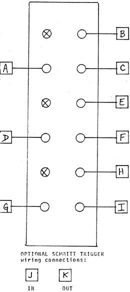

TRIPLE COMPARATOR PC board # Rll Self test of this module is best done using the sawtooth output (0 to +5V as available off a blue jack) from a VCO. Patch this into the "-" Input of one of the comparators (also marked with a small sawtooth sign), Monitor the output listening for increasing pulse width as the control is turned clockwise from before the line on the dial to the "(square)" position. Return the knob to the line and plug a 0 to +5V control voltage from any envelope generating module and listen for pulse width modulation (plug this control voltage into the "+" input). Test the other two comparators in a similar fashion.
|